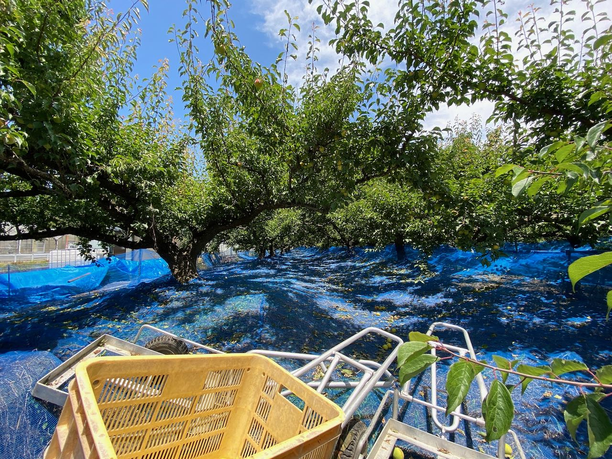

Our Philosophy
理念
「グローバルな視野を持ちながら、地域の人と深く関わる」
父が築いたDNAを受け継ぎ、
30年の食品ビジネス経験を、地域のために活かしたいと思いました。
一過性のイベントで終わらない、
町にビジネスを生み出す「仕組みづくり」に取り組む。
それがCBCの基本姿勢です。

潜在価値の発掘
地域には、まだ届いていない価値がある。全国各地の事例から得た広い視点で、その可能性を見つけ出します。ひとつの成功事例で終わらせず、仕組みとして広げていきます。

地域に根付く支援
仕組みを当てはめるだけでなく、地域に最適な形で根付かせていくプロセスと、事業の継続性を重視しています。「書類上の計画」ではなく、事業として回り続ける計画をつくります。

自走への伴走
地域ごとの想いやリソースを丁寧に見極め、その地域に合った形で導入をサポート。一過性のイベントで終わらせず、地域が自走できるところまで伴走します。